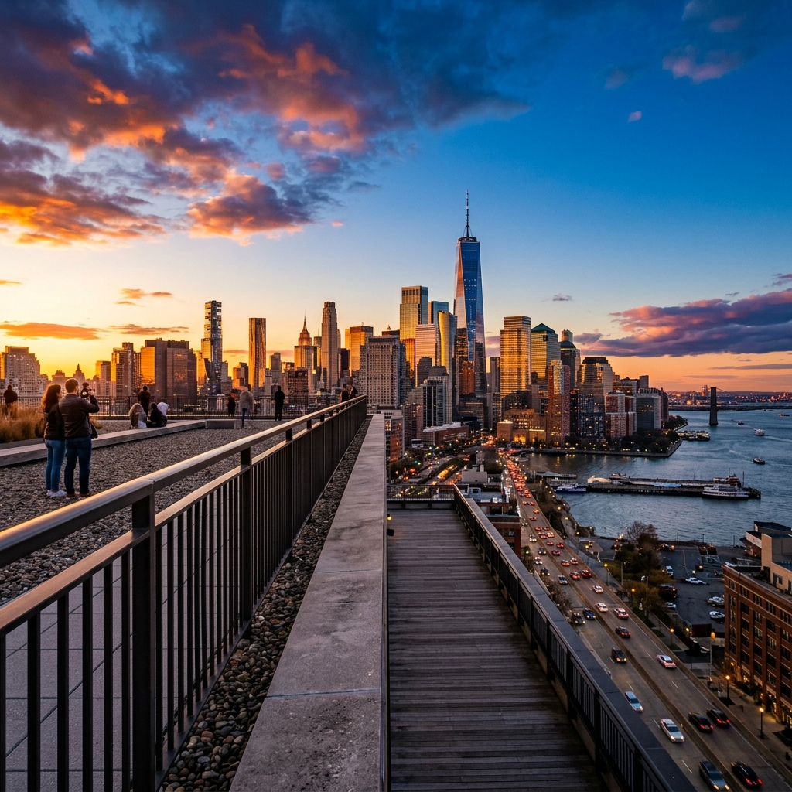

Architecture
A celebration of modern architecture and urban skylines at golden hour. Glass towers reflect the dying light while the city below pulses with energy — a study in verticality, reflection, and the geometry of progress.

Golden hour skyline — Glass and steel meeting the evening sky
Reflections — Light dancing on curtain walls
Perspective — Vanishing point between towers
Rooftop panorama — Where the urban grid meets endless sky